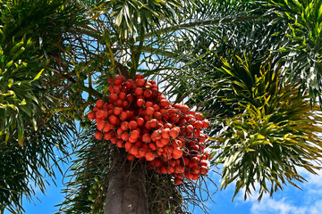

Betel Nut Palm (Areca catechu)
Scientific Name: Areca catechu
Description: The Betel Nut Palm, also known as the Areca Palm or Supari tree, is a slender, tropical palm tree native to South and Southeast Asia. It produces the well-known betel nuts, which are actually seeds of its fruit. The tree is tall with a smooth, ringed trunk and a crown of feathery, arching leaves. It is commonly cultivated for its nuts, which are chewed in many Asian cultures for their stimulant effects.
Care Tips:
- Water: Requires consistent moisture, especially when young. Do not let the soil dry out completely. Avoid waterlogging.
- Light: Prefers full sun to partial shade. Ideal for tropical or warm climates where sunlight is abundant.
- Temperature: Thrives in hot, humid conditions between 70°F to 95°F (21°C to 35°C). It is not frost-tolerant.
- Humidity: Needs high humidity. Misting the leaves or growing in naturally humid areas helps the plant stay healthy.
Medicinal Uses:
Betel nut from the Areca Palm has been used in traditional medicine and cultural practices for centuries. It is often chewed along with betel leaves and lime as a stimulant, believed to aid digestion and increase alertness. In Ayurvedic medicine, it is used for treating worms, indigestion, and oral health issues. However, excessive or long-term use is linked to health risks, including mouth ulcers and oral cancer. Always use with caution and awareness of the potential side effects.